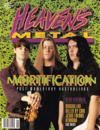

CMnexus
: Contemporary Christian culture, music, and media.
|
|
Heaven's Metal, May / Jun 1993, #41
| Cover |
|---|
|  | | Writers in this Issue |
|---|
Allison, Kevin
Beeman, Bob
Breise, Camille
Gates, Charles
Gish, Jeff
Hart, David S.
Jenison, David A.
Lott, Jeff
Love, Thomas
Mineo, Robert
Scheetz, Jeff
Van Pelt, Doug
|
Cover Feature:
- "Mortification's Afflictions and Answers"
Article:
- "Magdallan's Facelift" by Kevin Allison
- "Hi! We're Killed By Cain" by David A. Jenison
- "The Jesus Freaks' Dues and Don'ts" by David S. Hart
- "Believing In Uthanda" by David A. Jenison
- "Industrial Strength Christian Music"
- "Happiness On The Road With Crashdog" by Thomas Love
What ... Sez:Album Review:Concert Review:Pastor Bob: "Waiting, Dating, and Mating" by Pastor Bob
Licks & Tricks by Jeff Scheetz
HM Back Page: "Justice?"
|
|